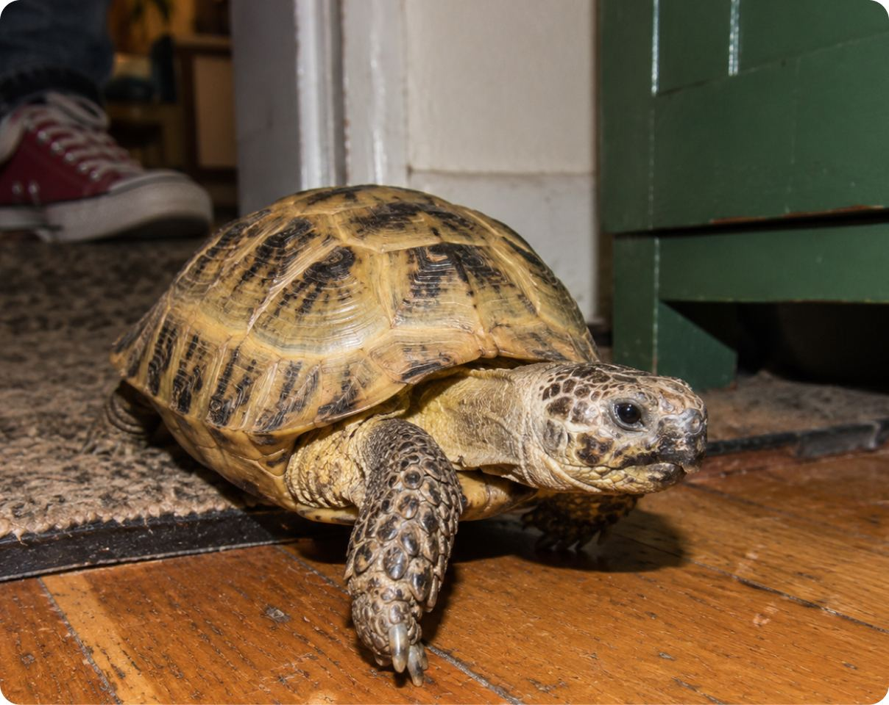
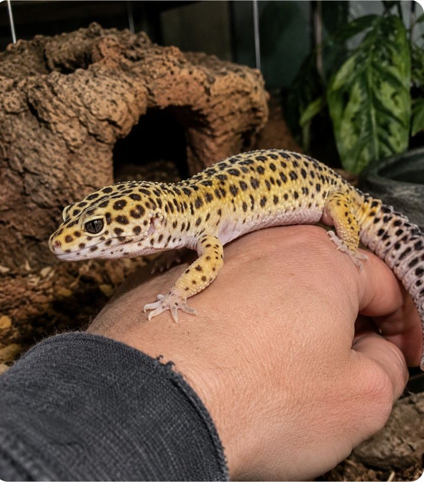
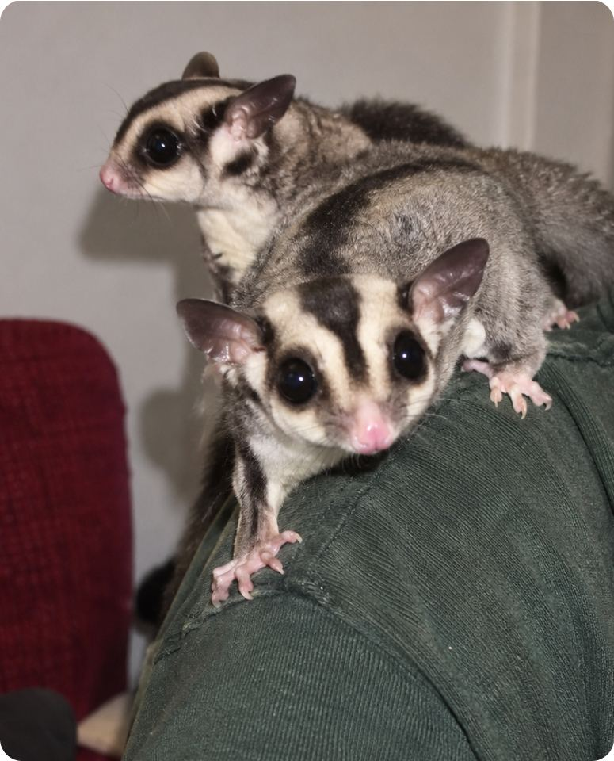
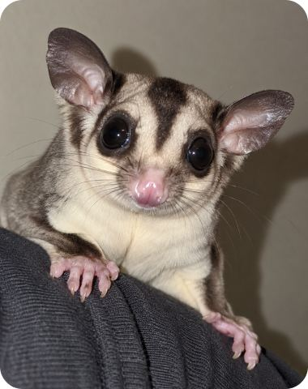

Среднеазиатская черепаха
Её часто передают по наследству
40+-ящрц!
Ящрц — медиа про экзотических животных и людей, которые их заводят. Рассказываем, как выбрать питомца, ухаживать за ним и не верить мифам
Читать статью


Её часто передают по наследству
40+Столько длится учёба от первого класса до диплома
20+И всё это время хочет компании
15+Каждый совет об уходе сверяем с врачом, который лечит экзотов
Записываем, как на самом деле живётся с питомцем, без глянца
Помогаем выбрать животное до покупки, а не после
Первая статья уже вышла
Весит как одно яблоко, умеет планировать с дерева на дерево и не выносит одиночества
Читать статьюПаспорт питомца

petaurus breviceps
-Пишите!
Расскажите, как живёте со своим питомцем — мы прочитаем каждую историю
написать на почту